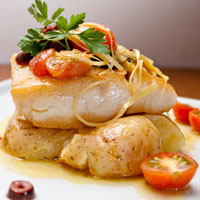

<!DOCTYPE html>
<html>
<head>
    <meta charset ="utf-8">
    <title><h1>Black Goose Bistro Gallery</h1></title>
    <Style>
    body{
    background-color: #faf2e4;
    margin: 0 10%;
    font-family: sans-serif; 
    }
    
    h1{
    text-align: center; 
    font-family: serif; 
    font-weight: normal; 
    text-transform: uppercase; 
    border-bottom: 1px solid #57b1dc;
    margin-top: 30px;
    }
    
    h2{
    color: #d1633c; 
    font-size: lem;
    }
    
    </style>
    </head>
</html>

<body>
<h1><br>Black Goose Bistro Gallery</h1>
<nav>
    <ul>
        <li><a href="index.html">Home</a></li>
        <li><a href="summermenu/summermenu_ex7.html">Menu</a></li>
        <li><a href="bgnews.html">News</a></li>
        <li><a href="jenskitchen/contact.html">Contact</a></li>
        <li><a href="jenskitchen/jenskitch.html">Jen's Kitchen</a></li>
    </ul>
        </nav>
</nav>

    <p>Not only is our food good, it's also good looking! Our patrons often stop to admire our fare with a quick instagram before digging in. We've collected a few of our favorite shots here.</p>

    <p><h2>Our Baked goods</h2></p>
    <p>We start our day at the crack of dawn to bake our own muffins, break, and dinner rolls. Loaves not used that day are donated to the local food shelter.</p>
    <p>   <a href="foodgallery/baked.html"></a></p>

    <p><h2>Our Burgers</h2></p>
    <p>People come from all over to enjoy our lovingly made burgers. We grind our own locally-sourced organic beef and turkey, so you know it's fresh, and free from fillers and other nonsense. Go for one of our creative topping combos or stick with the classics.</p>
    <p><a href="foodgallery/burger.html"></a></p>

    <p><h2>Catch of The Day</h2></p>
    <p>Our chef works with local fishermen to pick the freshest catch the sea has to offer. For our daily seafood special: our Roast Cod Caponata with Roasted Potatoes is an old favorite with the regulars.</p>
    <p><a href="foodgallery/fish.html"></a></p>

    <p><h2>Fresh Chicken</h2></p>
    <p>Our fried chicken is freshly made. Sourced from pasture-raised chickens, pairs great with out fresh fries!  </p>
    <p><a href="foodgallery/chicken.html"></a></p>

    <p><h2>French Fries</h2></p>
    <p>Our french fries wont dissapoint! great to accompany with any of our other dishes, or by itself. Our potatoes are sourced from local famrers, and cut here in out kitchen, always served fresh.</p>
    <P><a href="foodgallery/fries.html"></a></P>

    <p><h2>Fresh Tabouleh</h2></p>
    <p>This mediterrenian dish is perfect to try. Made with fresh vegetable, and bulgur wheat, this tangy dish will surely wake your taste buds.</p>
    <p><a href="foodgallery/tabouleh.html"></a></p>
<br>
<p>
    <div style="text-align: center;">
       <p>Check out our Social Media</p> 
       <p>      </p>
    </div>
</p>
</body>